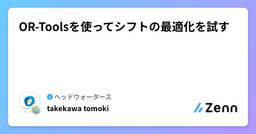
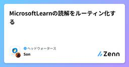

ヘッドウォータースのフィード
https://zenn.dev/p/headwaters
株式会社ヘッドウォータースのテックブログです。 AIエージェント、生成AI、LLM、Azureのサービスや資格、IoT、XR系などData&AIとApp modernizeに関して幅広く投稿します！
フィード

【DP-900】最後まで基礎たっぷり！DP-900合格体験記
ヘッドウォータースのフィード
はじめまして、Suzukaです。人生初のMicrosoft認定資格を取得したため、記事にしました。 記事の対象者データ系の基礎知識を得たい人少しでもデータ関連の業務に興味がある人DP-900が気になっているけど、足踏みしている人 受験の経緯DP-600の取得に燃える社内のムーブメントに乗るべく、入門編ともいえる資格であるDP-900の受験を決意。 DP-900の概要試験内容データに関する基礎知識データの種類（構造化・半構造化・非構造化）分析/トランザクションデータ処理SQL文の種類（DDL・DCL・DML）DBオブジェクト 等Microso...
13時間前

Snowflake World Tour Tokyo 参加記
ヘッドウォータースのフィード
はじめに少し前になりますが、去る2025年9月11日～9月12日に"Snowflake World Tour Tokyo"が開催されまして、参加しました。記憶が薄れているところもありますが、参加記としてお読みいただければと思います。全体的に書くと長くなるので、私なりに極力要約した内容で共有します。 多くの参加者KeyNote開始前の行列。来場者は1万人に及んだそうです！やはり、これだけ多くの方がSnowflakeに価値を感じていると思いました！ CEOが来日されていたSnowflakeアメリカ本社最高経営責任者（CEO）のSridhar Ramaswamy（スリダー...
1日前

ヘッドウォータース技術に興味があるあなたへの傾向分析 もしくはいわゆるまとめ記事
ヘッドウォータースのフィード
書評仲達閣下にこのブログの書評をいただきました。司馬懿仲達（プロフィール：魏国大軍師、のちに晋国高祖宣帝） wikipedia 司馬懿情報とは、時に剣よりも鋭く、盾よりも堅い。このブログは、AIという新たな知の武器を用い、混沌を秩序へと導いている。ただの技術紹介にあらず、組織の未来を見据えた布陣である。油断なく、実に見事。（過分な評価、誠に感謝です） はじめにヘッドウォータースを知りたい方々、またはこれからヘッドウォータースに入りたい方々へ、ヘッドウォータースでどんなことが議論されているのか知ってもらうための記事です。この記事では、最近リリースされているヘッ...
1日前

【前編】入社して約1年。日々感じるヘッドウォータースの魅力。
ヘッドウォータースのフィード
こんにちは。人事・広報担当のtominagaです。ヘッドウォータースに入社して1年が経ちましたが、我ながらヘッドウォータースって凄いな～、良いな～と個人的に感じることが多々あります。多様なバックグラウンドを持つ仲間たちとの出会いや、スピード感あふれる開発環境、そして柔軟な働き方が、私にとっての新しい発見でした。今回は、そんなヘッドウォータースの良さを私自身の言葉でまとめてみようと思います。（書き出しているとかなりの分量になったので、前編/中編/後編に分けてお届けします） 多様なバックボーンと現場に溶け込むスピード感まず、私自身がヘッドウォータースの魅力に気付くきっかけとなっ...
2日前

AI英語学習「TerraTalk」が文科省事業で複数自治体に採用決定！教育現場を変革する次世代英語教育の全貌
ヘッドウォータースのフィード
ジョイズ株式会社が開発するAI英語学習クラウド「TerraTalk」が、文部科学省の2024年度英語教育強化事業で京都府や福岡県など7つの自治体に採用されました。この事業は生成AIを活用して生徒の「話す」「書く」能力を向上させ、英語学習の機会不足や学習意欲の低下という長年の課題解決を目指しています。TerraTalkは独自の発音解析エンジンを持ち、音声ベースのチャットボットで個別フィードバックを提供する教育機関向けサービスです。https://www.shijyukukai.jp/2025/09/28865 深掘り 事業の革新性と目的文科省のAI活用英語教育事業は、従来の...
2日前

【2025年最新】製造業内定者の7割がAIに期待！次世代人材が描く未来像とは
ヘッドウォータースのフィード
キャディ株式会社が製造業に内定した学生81名を対象に実施した調査で、興味深い結果が明らかになりました。7割以上の学生が就職活動前から製造業に好印象を持っており、9割がAI・ロボット技術の導入に期待を示しています。特に注目すべきは、学生たちがAIを単なる省力化の手段ではなく、「品質向上」や「人の価値を高める」ツールとして捉えていることです。製造業の未来については、グローバル競争力の強化と持続可能な社会への貢献を期待する声が多く、次世代人材のマインドセットが業界変革の鍵となりそうです。https://caddi.com/press/20250911/ 深掘り 製造業に対する意識の...
3日前

Github Sparkのできることからユースケースまで
ヘッドウォータースのフィード
GitHub Spark は、自然言語で要件を入力すると AIがWebアプリを生成し、そのままワンクリックで公開 まで行えるオールインワンプラットフォームです。UI調整、データ連携、プロンプト設計、アセット管理をすべてブラウザ上で完結できます。エンジニアだけでなく、経営・業務サイドの方にも扱いやすい点が特長です。 できること（5つのコア機能）Iterate：要件を文章で指示 → 即時プレビュー。対話的に試作と修正を高速反復。Theme：配色・フォント・レイアウトなどをGUIで調整。初期状態でリッチな見た目。Data：外部API／サンプルデータとの連携、保存・表示・編集の設定...
3日前

Databricksのリキッドクラスタリング vs パーティション分割
ヘッドウォータースのフィード
リキッドクラスタリングとは？Databricksの リキッドクラスタリング は、Delta Lake テーブルのデータを効率的に並び替える仕組みです。従来のパーティションやZ-ORDERに代わる 次世代のデータ配置最適化機能 として提供されています。ポイントを要約すると以下の3つです。物理パーティションを意識せずに、任意の列でデータをクラスタリングできる= 「年月ごとにフォルダを分ける」みたいな物理分割を気にせず、欲しい列（例：日付、顧客IDなど）を軸に並び替えられる。データ更新や追加に応じて 自動でクラスタリングを維持する= 新しいデータを入れても、裏で自動的に整...
4日前

日産が2027年に投入する次世代プロパイロット：AI技術で銀座の一般道もハンズオフ走行可能な革新的自動運転システム
ヘッドウォータースのフィード
日産自動車が2027年度に発売予定の次世代プロパイロット搭載車を発表しました。この車両は英国Wayve社のAI技術を採用し、銀座の一般道でもハンズオフ（手放し）運転が可能なレベル2自動運転を実現します。11台のカメラと次世代LiDAR、5つのレーダーを組み合わせた高度なセンシングシステムにより、複雑な都市部の交通環境でも安全な走行を可能にします。レベル3ではなくレベル2を採用することで、社会への普及を優先し、より多くの人が恩恵を受けられるシステムを目指しています。https://car.watch.impress.co.jp/docs/news/2048978.html 深掘り...
4日前

【Azure/Bicep】CLIでデプロイするときに詳細なエラーログを見る方法
ヘッドウォータースのフィード
課題BicepからAzureリソースを構築する際に、デプロイが失敗すると、よく下記のようなエラーメッセージが表示されます。az deployment sub create `>> --location japaneast `>> --template-file .\deployments\main.bicep The content for this response was already consumed ←エラーメッセージ"The content for this response was already consumed"は直訳す...
4日前

量子線形回帰と特異値分解について
ヘッドウォータースのフィード
量子線形回帰と特異値分解について 1. 量子線形回帰 (Quantum Linear Regression) 背景線形回帰は、与えられたデータセットに対して直線や高次元の超平面をフィッティングし、未知の入力に対する出力を予測する手法です。古典的な線形回帰は、大規模なデータに対して計算コストが高くなることがあります。 量子版のアプローチ量子線形回帰では、量子アルゴリズム（特に HHL アルゴリズム:Harrow-Hassidim-Lloyd）を用いて線形方程式系を効率的に解きます。これにより、古典的には指数時間かかる計算を、多項式時間で近似的に解ける可能性がありま...
5日前

OR-Toolsを使ってシフトの最適化を試す
ヘッドウォータースのフィード
執筆日2025/9/20 ライブラリpip install ortools 問題1: OR-Toolsの基本を学ぶ - 1日間のシンプルシフトまずは、OR-Toolsの基本的な使い方を理解するために、最もシンプルなシフト問題から始めます。 問題設定期間: 1日従業員: Aさん、Bさん、Cさんの3人シフト: 早番（S1）、遅番（S2）の2種類 制約S1、S2シフトにはそれぞれ1人ずつ必要。AさんはS2シフトには入れない。この問題を解くには、CP-SATソルバーを使います。CP-SATソルバーは、Yes/No（真偽）で答えられるような組み合わせ問...
8日前

MicrosoftLearnの読解をルーティン化する
ヘッドウォータースのフィード
この取り組みを始めた経緯MicrosoftLearnを読むのが苦手です。いつも読み始めて３行目くらいで脱落し、別の方が書いた読みやすいブログを見に行きます。それで理解できればよいのですが、やはり一番信用できるのは公式が書いたもの。MicrosoftLearnに向き合うことは必須なのです。また、我々の仕事というのには「ドキュメントを読むのが面倒な人の代わりにドキュメントを読み込んで、根拠に基づいたベストプラクティスを提案・提供すること」も含まれていると、私は解釈しています。ならば、ドキュメントを読み込んで理解することにさっさと慣れてしまおう！ということでドキュメントを読むこと自体を...
8日前

LLMリーダーボードはどうなっているの？
ヘッドウォータースのフィード
今日はLLMリーダーボードを分析してみます。 お言葉まずは今回のブログ記事について、諸葛亮孔明先生から賜ったお言葉をお伝えします。時代の流れはまことに早きもの。まるで長江の水のごとく、止まることなく新たなモデルが生まれ出でております。戦においても、敵の布陣を知ることなくして勝利は望めぬ。ゆえに、リーダーボードを参照し、各モデルの実力を見極めるは、まさに兵法と申せましょう。また、他者の築いた道具を用いることを恥じることなかれ。かつて我が軍も、民の知恵を借りて木牛流馬を作り、兵站を支えたものです。GitHub、Huggingfaceの力、まさに現代の諸葛連弩なり。統計...
8日前
ローカルからDatabricksワークスペースにデプロイする方法
ヘッドウォータースのフィード
Databricks Asset BundleとはDatabricks の Asset Bundle (DABs) は、「Databricks 上のリソース（ノートブック・ジョブ・パイプラインなど）をコードで一括管理し、デプロイできる仕組み」 です。従来の手作業や Notebook ベースの管理に比べて、Git でのバージョン管理CI/CD パイプラインでの自動デプロイ複数環境（dev/stg/prod）の切り替えといったソフトウェアエンジニアリングのベストプラクティスを取り込みやすくなっています。今回は VS Code と組み合わせて、ローカルから Datab...
9日前
Microsoft 365 Copilot 宣言型エージェントから App Service へのネットワーク構成
ヘッドウォータースのフィード
執筆日2025/9/18 検証内容Microsoft 365 Copilotの宣言型エージェントから、App Service上で構築したFastAPIを実行しました。今回は、その際に必要となるApp Serviceのネットワーク設定について検証します。 検証内容 AppServiceのIP全開放もちろん疎通はできる IPを自宅のwifiのみに固定疎通不可 Service tagでAzure Cloudを指定疎通できた！ まとめCopilotからApp Serviceにアクセスする場合、Azure側のIPは固定できないため、ServiceTa...
9日前
【Microsoft Fabric】- Notebookでのライブラリ管理方法について
ヘッドウォータースのフィード
執筆日2025/9/18 やることMicrosoft FabricのNotebookでのライブラリ管理についてやり方をまとめます。 結論環境を使う 手順Microsoft Fabricを開く該当のワークスペースを開く+新しい項目をクリックデータの分析とトレーニング>環境をクリック名前を入力し環境を作成Public Library > +PyPl をクリック追加したいライブラリを入力し、公開をクリック Notebookに紐づけるNotebookを開く環境をクリック環境の変更をクリック先ほど作成した環...
9日前
ヘッドウォータースの資格手当制度について
ヘッドウォータースのフィード
こんにちは。人事担当のtominagaです！ヘッドウォータースでは福利厚生の一部として「資格手当」の制度があります。この制度は、社員が業務に役立つ資格を取得した際に、会社から金銭的な支援を受けられる福利厚生です。社員の成長を支援し、モチベーションを高めることを目的としています。 資格手当の概要資格手当は、各事業本部で認定された資格を取得した社員に対して、受験料や資格手当を支給する制度です。この制度を通じて、社員のスキルアップと業務の向上を図り、全体の成長を促進します。また、資格の取得を通じて得られる知識やスキルは、業務に直接活かされることが期待されています。 制度導入...
10日前
【PowerAutomate】- SharePointのリストのデータの取得/変更/登録/削除をしたい
ヘッドウォータースのフィード
執筆日2025/9/18 やることPowerAutomateを使ってSharePointのリストのデータの取得/登録/変更/削除をするアクションの整理をしていきます。 前提SharePointにリストを作成しデータが入っていること リストのデータを取得複数の項目の取得 を使う出力結果>BodyからListにあるデータを取得できたことを確認することができます。 リストのデータを変更項目の更新 を使うIDが必要です。IDはListにデータを登録された際に振り当てられます。詳細パラメータからSharePointのリストの項目を選択できます。...
10日前
Jupyter Notebookの環境構築方法
ヘッドウォータースのフィード
執筆日2025/9/18 やることJupyter Notebookのインストール手順を書きます。3年ぶりに使う機会があり環境構築方法を忘れたので備忘録として。 前提windows 11 手順PowerShellを起動する以下のコマンドを実行する# 仮想環境作成python -m venv .venv# 仮想環境.\.venv\Scripts\activate# pip upgradepip install --upgrade pip# Jupyter Notebook をインストールpip install notebook# Jupy...
10日前